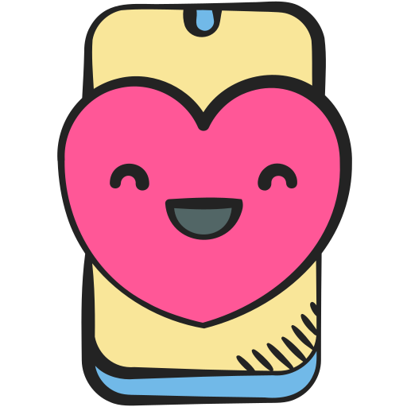

| Experience | Date | description |
|---|---|---|
| Cognifisense- Research Assistant | May 2025 - Present | Guided participants through VR-based chronic pain treatment sessions. Troubleshot VR/Tablet tech issues to ensure smooth data collection. Completed focused training in pain neuroscience to support participant education and engagement. |
| American Academy of Pediatrics- Technical Expert Panel | November 2023- Present | Co-led AAP initiatives through policy review, content creation, speaking engagements, and digital outreach. Contributed to the planning and execution of a Virtual Youth Forum, leading to digital literacy efforts with young people across the country. Elected to be part of the Technical Expert Panel, representing youth perspective in a group of experts in the tech industry. |
| Hope' Door New Beginning Center- Plano Mayor Intern and YAC Co-Sponsor | June 2023-August 2024 | Ran the domestic violence shelter’s social media and single-handedly increased user engagement by 244%. Created a research series educating on the organization’s brand and resources as well as aspects of violence prevention that reached an audience of nearly 10,000 users. Co-created a Youth Advisory Council, training and mobilizing young people in my community to get actively involved in violence prevention efforts. |